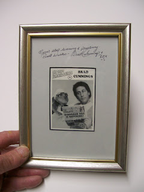

#38 Ventrilo-Card (signed!)
5/23/2010
{kind=link}

Brad Cummings
Set 4; Card #2
Set 4; Card #2
Brad Cummings got started in ventriloquism when he was twelve, after reading Paul Winchell's book "Ventriloquism For Fun and Profit". In addition to Paul Winchell, he was inspired by Edgar Bergen and Jimmy Nelson. His first dummy was a Jerry Mahoney doll.
Brad was a finalist in the Los Angeles Stand Up Comedy Competition which aired on SHOWTIME, and appeared in major revue shows in Tahoe, Reno, Las Vegas and Atlantic City. He has opened for many stars including John Denver, Petula Clark and Dorothy Hamill. His television appearances include "The Merv Griffin Show," "An Evening at the Inprov," "Comedy on the Road," "Caroline's Comedy Hour," "The Statler Brothers" and a commercial for Long John Silver restaurant.
Brad is currently working on a children's television show with his pet dinosaur Rex.Copyright 1995 OO-LA-LA, INK
* * * * * *
Steve Schultz is the winner of today's drawing and will receive the framed Brad Cummings and Rex Collector Card which has been inscribed and signed by Brad. What a great prize for any collector. Contact Mr. D to confirm your address and claim your prize.